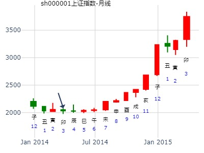

主帖标题: 1月21-25日大盘涨跌卦!
以下是引用金眼牛在2008-1-18 19:09:00的发言：占事：1月21-25日大盘涨跌? 公历时间：2008年1月18日15时11分 星期五
农历时间：丁亥年十二月十一申时
干支：丁亥年 癸丑月 丁巳日 戊申时 (旬空：子丑)
神煞：驿马—亥 桃花—午 日禄—午 贵人—酉，亥
坎宫：雷火丰 离宫：离为火（六冲）
六神 【本 卦】 【变 卦】
青龙 ▅▅ ▅▅ 官鬼庚戌土 ×→ ▅▅▅▅▅ 妻财己巳火 世
玄武 ▅▅ ▅▅ 父母庚申金 世 ▅▅ ▅▅ 官鬼己未土
白虎 ▅▅▅▅▅ 妻财庚午火 ▅▅▅▅▅ 父母己酉金
螣蛇 ▅▅▅▅▅ 兄弟己亥水 ▅▅▅▅▅ 兄弟己亥水 应
勾陈 ▅▅ ▅▅ 官鬼己丑土 应 ▅▅ ▅▅ 官鬼己丑土
朱雀 ▅▅▅▅▅ 子孙己卯木 ▅▅▅▅▅ 子孙己卯木
我在别的卦中看到了暴跌的卦象。但在这个卦中始终没有看到。然后就仔细研究，终于发现了。收获！！！
丑月世爻入墓原因？还是丑月兄弟有余气，兄弟暗动原因？
占事: 1月16--20上证指数趋势起卦方式：手动摇卦
公历时间：2012年1月10日9时20分 农历时间：辛卯年 十二月十七日巳时
干支：辛卯年 辛丑月 庚午日 辛巳时
旬空：午未 辰巳 戌亥 申酉
神煞：驿马─申 桃花─卯 日禄─申 贵人─丑，未
坎宫：雷火丰 离宫：离为火（六冲）
六神 【本 卦】 【变 卦】
螣蛇 ▄▄ ▄▄ 官鬼庚戌土 X-> ▄▄▄▄▄ 妻财己巳火 世
勾陈 ▄▄ ▄▄ 父母庚申金 世 ▄▄ ▄▄ 官鬼己未土
朱雀 ▄▄▄▄▄ 妻财庚午火 ▄▄▄▄▄ 父母己酉金
青龙 ▄▄▄▄▄ 兄弟己亥水 ▄▄▄▄▄ 兄弟己亥水 应
玄武 ▄▄ ▄▄ 官鬼己丑土 应 ▄▄ ▄▄ 官鬼己丑土
白虎 ▄▄▄▄▄ 子孙己卯木 ▄▄▄▄▄ 子孙己卯木
ppm555
周线收阳
丰之离,2月份涨幅最好的板块热点 by 金玉堂
时间: 2023-01-16
干支: 壬寅年癸丑月甲戌日 (旬空: 申酉 )
丰 离
六神 伏神 本 卦 变 卦
玄武 ▅▅ ▅▅ 官鬼戌土 Ｘ→ ▅▅▅▅▅ 妻财巳火 世
白虎 ▅▅ ▅▅ 父母申金 世 ▅▅ ▅▅ 官鬼未土
腾蛇 ▅▅▅▅▅ 妻财午火 ▅▅▅▅▅ 父母酉金
勾陈 ▅▅▅▅▅ 兄弟亥水 ▅▅▅▅▅ 兄弟亥水 应
朱雀 ▅▅ ▅▅ 官鬼丑土 应 ▅▅ ▅▅ 官鬼丑土
青龙 ▅▅▅▅▅ 子孙卯木 ▅▅▅▅▅ 子孙卯木
一开始按照以往卦例，猜家电家居，后根据盘面立马调整为软件互联网。
六爻为虚。关在房间里编软件，打游戏
600975新五丰最近走势：
公历时间：2011年2月9日16时12分 星期三
干支：辛卯年 庚寅月 乙未日 甲申时 (旬空：辰巳)
坎宫：雷火丰 离宫：离为火（六冲）
六神 【本 卦】 【变 卦】
玄武 ▅▅ ▅▅ 官鬼庚戌土 ×→ ▅▅▅▅▅ 妻财己巳火 世
白虎 ▅▅ ▅▅ 父母庚申金 世 ▅▅ ▅▅ 官鬼己未土
螣蛇 ▅▅▅▅▅ 妻财庚午火 ▅▅▅▅▅ 父母己酉金
勾陈 ▅▅▅▅▅ 兄弟己亥水 ▅▅▅▅▅ 兄弟己亥水 应
朱雀 ▅▅ ▅▅ 官鬼己丑土 应 ▅▅ ▅▅ 官鬼己丑土
青龙 ▅▅▅▅▅ 子孙己卯木 ▅▅▅▅▅ 子孙己卯木
短线看涨。但因世爻申金月破，横盘不止。
月线。如果管用。
主帖标题: 有关起卦日和预测日关系的解释
公历：2004年3月30日8时37分，星期二。
干支：甲申年 丁卯月 戊申日 丙辰时 (卦身：辰)
华易算命网提供：http://www.k366.com 六爻排盘：http://cm.k366.com/pp/liuyao.asp
主变卦 雷火丰(坎宫) 之 离为火(离宫) [空亡:寅、卯]
朱雀 ▅▅ ▅▅×官鬼庚戌土 ▅▅▅▅▅ 妻财己巳火 世
青龙 ▅▅ ▅▅ 父母庚申金 世 ▅▅ ▅▅ 官鬼己未土
玄武 ▅▅▅▅▅ 妻财庚午火 ▅▅▅▅▅ 父母己酉金
白虎 ▅▅▅▅▅ 兄弟己亥水 ▅▅▅▅▅ 兄弟己亥水 应
螣蛇 ▅▅ ▅▅ 官鬼己丑土 应 ▅▅ ▅▅ 官鬼己丑土
勾陈 ▅▅▅▅▅ 子孙己卯木 ▅▅▅▅▅ 子孙己卯木
测本轮大熊市到何时结束？
公历起卦时间：2014年3月16日11时0分 (手工指定)
干支：甲午年 丁卯月 丙戌日 甲午时 （日空：午未）
神煞：驿马－申 桃花－卯 日禄－巳 贵人－酉，亥
坎宫：雷火丰 离宫：离为火 (六冲)
六神 伏神 本 卦 变 卦
青龙 官鬼庚戌土 ▅▅ ▅▅ ╳→ 妻财己巳火 ▅▅▅▅▅ 世
玄武 父母庚申金 ▅▅ ▅▅ 世 官鬼己未土 ▅▅ ▅▅
白虎 妻财庚午火 ▅▅▅▅▅ 父母己酉金 ▅▅▅▅▅
腾蛇 兄弟己亥水 ▅▅▅▅▅ 兄弟己亥水 ▅▅▅▅▅ 应
勾陈 官鬼己丑土 ▅▅ ▅▅ 应 官鬼己丑土 ▅▅ ▅▅
朱雀 子孙己卯木 ▅▅▅▅▅ 子孙己卯木 ▅▅▅▅▅

占事：600459贵研铂业最近二周走势如何？阿晖在线
公历起卦时间：2015年3月2日21时36分 (在线摇卦)
干支：乙未年 戊寅月 丁丑日 辛亥时 （日空：申酉）
坎宫：雷火丰 离宫：离为火 (六冲)
六神 伏神 本 卦 变 卦
青龙 官鬼庚戌土 ▅▅ ▅▅ ╳→ 妻财己巳火 ▅▅▅▅▅ 世
玄武 父母庚申金 ▅▅ ▅▅ 世 官鬼己未土 ▅▅ ▅▅
白虎 妻财庚午火 ▅▅▅▅▅ 父母己酉金 ▅▅▅▅▅
腾蛇 兄弟己亥水 ▅▅▅▅▅ 兄弟己亥水 ▅▅▅▅▅ 应
勾陈 官鬼己丑土 ▅▅ ▅▅ 应 官鬼己丑土 ▅▅ ▅▅
朱雀 子孙己卯木 ▅▅▅▅▅ 子孙己卯木 ▅▅▅▅▅
寅日继续摸涨停，虽然冲了旬空的申。但是申弱不经冲，不会冲实。
招财公主在线卦 性别：女 占事：招财公主测明天大盘走势
公历起卦时间：2015年3月24日22时30分 (在线摇卦)
干支：乙未年 己卯月 己亥日 乙亥时 （日空：辰巳）
坎宫：雷火丰 离宫：离为火 (六冲)
六神 伏神 本 卦 变 卦
勾陈 官鬼庚戌土 ▅▅ ▅▅ ╳→ 妻财己巳火 ▅▅▅▅▅ 世
朱雀 父母庚申金 ▅▅ ▅▅ 世 官鬼己未土 ▅▅ ▅▅
青龙 妻财庚午火 ▅▅▅▅▅ 父母己酉金 ▅▅▅▅▅
玄武 兄弟己亥水 ▅▅▅▅▅ 兄弟己亥水 ▅▅▅▅▅ 应
白虎 官鬼己丑土 ▅▅ ▅▅ 应 官鬼己丑土 ▅▅ ▅▅
腾蛇 子孙己卯木 ▅▅▅▅▅ 子孙己卯木 ▅▅▅▅▅
丰之离，父母持世，官化财。兄弟入月墓又日破，
测600383金地地产二周内走势如何？暴涨之卦。最后二周。
王 占事：600383二周内走势如何？
公历起卦时间：2014年4月16日16时41分 (手工指定)
干支：甲午年 戊辰月 丁巳日 戊申时 （日空：子丑）
坎宫：雷火丰 离宫：离为火 (六冲)
六神 伏神 本 卦 变 卦
青龙 官鬼庚戌土 ▅▅ ▅▅ ╳→ 妻财己巳火 ▅▅▅▅▅ 世
玄武 父母庚申金 ▅▅ ▅▅ 世 官鬼己未土 ▅▅ ▅▅
白虎 妻财庚午火 ▅▅▅▅▅ 父母己酉金 ▅▅▅▅▅
腾蛇 兄弟己亥水 ▅▅▅▅▅ 兄弟己亥水 ▅▅▅▅▅ 应
勾陈 官鬼己丑土 ▅▅ ▅▅ 应 官鬼己丑土 ▅▅ ▅▅
朱雀 子孙己卯木 ▅▅▅▅▅ 子孙己卯木 ▅▅▅▅▅
1.见波段顶这旬开始戌亥空了。
1.官化财，鬼来送财笑呵呵！
2.但是在六爻极位，所以是最后二周。因为摇的是二周卦。
3，兄弟爻太弱，入月墓又日破。代表空方无力。
4.寅日冲父母爻世爻暗动，且补亥水日破，转折点？？
长江投资 4月风生水起
公历时间：2017年4月5日14时36分
干 支：丁酉年 甲辰月 壬戌日 丁未时
旬 空：辰巳 寅卯 (子丑) 寅卯
坎宫：雷火丰 离宫：离为火（六冲）
六神 【本 卦】 【变 卦】
白虎 ▄▄ ▄▄ 官鬼庚戌土 X-> ▄▄▄▄▄ 妻财己巳火 世
螣蛇 ▄▄ ▄▄ 父母庚申金 世 ▄▄ ▄▄ 官鬼己未土
勾陈 ▄▄▄▄▄ 妻财庚午火 ▄▄▄▄▄ 父母己酉金
朱雀 ▄▄▄▄▄ 兄弟己亥水 ▄▄▄▄▄ 兄弟己亥水 应
青龙 ▄▄ ▄▄ 官鬼己丑土 应 ▄▄ ▄▄ 官鬼己丑土
玄武 ▄▄▄▄▄ 子孙己卯木 ▄▄▄▄▄ 子孙己卯木
主帖标题: 占2013年夏季巳午未月，上证指数走势？（不回复就走宝啦！）
占事: 占2013年夏季巳午未月，上证指数走势？
起卦方式：手动摇卦 线上排盘系统
公历时间：2013年5月3日18时50分
干支：癸巳年 丙辰月 己巳日 癸酉时
旬空：午未 子丑 戌亥 戌亥
坎宫：雷火丰 离宫：离为火（六冲）
六神 【本 卦】 【变 卦】
勾陈 ▄▄ ▄▄ 官鬼庚戌土 X-> ▄▄▄▄▄ 妻财己巳火 世
朱雀 ▄▄ ▄▄ 父母庚申金 世 ▄▄ ▄▄ 官鬼己未土
青龙 ▄▄▄▄▄ 妻财庚午火 ▄▄▄▄▄ 父母己酉金
玄武 ▄▄▄▄▄ 兄弟己亥水 ▄▄▄▄▄ 兄弟己亥水 应
白虎 ▄▄ ▄▄ 官鬼己丑土 应 ▄▄ ▄▄ 官鬼己丑土
螣蛇 ▄▄▄▄▄ 子孙己卯木 ▄▄▄▄▄ 子孙己卯木
丰者大也、大的丰收之意；变卦离为火，离者丽也、光明亮丽之意。
申金父母持世，月生、日合、官鬼发动来生、自化回头生、应生世爻，显示政策利多
主力机构入市意愿强烈！今夏上证指数应为上升走势。
兄弟爻墓于月建、日冲，显示大多数散户处于套牢之中，子孙爻弱，多数股票现在的
股价都很便宜，处于相对的低位。
股票方面，青龙临午火财、申金父母、子孙卯木，看好美丽中国概念股、科技股、稀土永磁、
金融证券股。祝各位易友今年都有好的收益！
王 占事：近二周大盘？
起卦方式：手动摇卦 易经股市论坛 www.yijingstock.com 在线排盘系统
公历时间：2014年5月5日12时28分
干 支：甲午年 戊辰月 丙子日 甲午时 （申酉空）
坎宫：雷火丰 离宫：离为火（六冲）
六神 【本 卦】 【变 卦】
青龙 ▄▄ ▄▄ 官鬼庚戌土 X-> ▄▄▄▄▄ 妻财己巳火 世
玄武 ▄▄ ▄▄ 父母庚申金 世 ▄▄ ▄▄ 官鬼己未土
白虎 ▄▄▄▄▄ 妻财庚午火 ▄▄▄▄▄ 父母己酉金
螣蛇 ▄▄▄▄▄ 兄弟己亥水 ▄▄▄▄▄ 兄弟己亥水 应
勾陈 ▄▄ ▄▄ 官鬼己丑土 应 ▄▄ ▄▄ 官鬼己丑土
朱雀 ▄▄▄▄▄ 子孙己卯木 ▄▄▄▄▄ 子孙己卯木
上六：丰其屋，蔀其家，窥其户，闃其无人，三岁不见，凶。
象曰：丰其屋，天际翔也。 窥其户，闃其无人，自藏也。
（莫非又是世爻旬空之故？父爻月生旺而旬空。待到申酉出空是个小顶。）
官化财来是好爻，可是戌月破而世爻又空。
风生水起 占事：中国铝业未来二周
起卦方式：手动摇卦
公历时间：2015年5月15日12时0分
干 支：乙未年 辛巳月 辛卯日 甲午时
旬 空：辰巳 申酉 午未 辰巳
坎宫：雷火丰 离宫：离为火（六冲）
六神 【本 卦】 【变 卦】
螣蛇 ▄▄ ▄▄ 官鬼庚戌土 × ▄▄▄▄▄ 妻财己巳火 世
勾陈 ▄▄ ▄▄ 父母庚申金 世 ▄▄ ▄▄ 官鬼己未土
朱雀 ▄▄▄▄▄ 妻财庚午火 ▄▄▄▄▄ 父母己酉金
青龙 ▄▄▄▄▄ 兄弟己亥水 ▄▄▄▄▄ 兄弟己亥水 应
玄武 ▄▄ ▄▄ 官鬼己丑土 应 ▄▄ ▄▄ 官鬼己丑土
白虎 ▄▄▄▄▄ 子孙己卯木 ▄▄▄▄▄ 子孙己卯木
主帖标题: 2020.05.13日上证指数擂台赛第十七场第3局 Z方（日测）
replyreload += ',' + 12931420;齐齐参与讨论挺好的，经过自己的思考，就是辩证，不会盲从；对了，给参与研究的朋友一个鼓励。错了，不会被人取笑。（那些不参与研究而在过后取笑他人的人，并无人所具备的道德修养，无人格则无须理会。且论坛会对攻击研究者的现象作出处理。）
公历起卦时间：2020年5月12日19时27分 (手工指定)
干支：庚子年 辛巳月 乙卯日 丙戌时 （日空：子丑）
神煞：驿马－巳 桃花－子 日禄－卯 贵人－子，申
坎宫：雷火丰 离宫：离为火 (六冲)
六神 伏神 本 卦 变 卦
玄武 官鬼庚戌土 ▅▅ ▅▅ ╳→ 妻财己巳火 ▅▅▅▅▅ 世
白虎 父母庚申金 ▅▅ ▅▅ 世 官鬼己未土 ▅▅ ▅▅
螣蛇 妻财庚午火 ▅▅▅▅▅ 父母己酉金 ▅▅▅▅▅
勾陈 兄弟己亥水 ▅▅▅▅▅ 兄弟己亥水 ▅▅▅▅▅ 应
朱雀 官鬼己丑土 ▅▅ ▅▅ 应 官鬼己丑土 ▅▅ ▅▅
青龙 子孙己卯木 ▅▅▅▅▅ 子孙己卯木 ▅▅▅▅▅
主帖标题: 转发“个股卦例及反馈”（一）
未来两周如何走？
排卦：元亨利贞网六爻在线排盘系统 https://www.china95.net
公历起卦时间：2021年5月24日9时1分 (电脑自动)
干支：辛丑年 癸巳月 壬申日 乙巳时 （日空：戌亥）
神煞：驿马－寅 桃花－酉 日禄－亥 贵人－卯，巳
坎宫：雷火丰 离宫：离为火 (六冲)
六神 伏神 本 卦 变 卦
白虎 官鬼庚戌土 ▅▅ ▅▅ ╳→ 妻财己巳火 ▅▅▅▅▅ 世
螣蛇 父母庚申金 ▅▅ ▅▅ 世 官鬼己未土 ▅▅ ▅▅
勾陈 妻财庚午火 ▅▅▅▅▅ 父母己酉金 ▅▅▅▅▅
朱雀 兄弟己亥水 ▅▅▅▅▅ 兄弟己亥水 ▅▅▅▅▅ 应
青龙 官鬼己丑土 ▅▅ ▅▅ 应 官鬼己丑土 ▅▅ ▅▅
玄武 子孙己卯木 ▅▅▅▅▅ 子孙己卯木 ▅▅▅▅▅
主帖标题: 主题：新州港[600190能否得财？
锦州港[600190]何日反弹？
起卦方式：手工指定 六爻线上排盘系统
公历时间：2007年6月4日10时38分
干支：丁亥年 乙巳月 己巳日 己巳时 旬空：午未 寅卯 戌亥 戌亥
坎宫：雷火丰 离宫：离为火（六冲）
勾陈 ▄▄ ▄▄ 官鬼庚戌土 X-> ▄▄▄▄▄ 妻财己巳火 世
朱雀 ▄▄ ▄▄ 父母庚申金 世 ▄▄ ▄▄ 官鬼己未土
青龙 ▄▄▄▄▄ 妻财庚午火 ▄▄▄▄▄ 父母己酉金
玄武 ▄▄▄▄▄ 兄弟己亥水 ▄▄▄▄▄ 兄弟己亥水 应
白虎 ▄▄ ▄▄ 官鬼己丑土 应 ▄▄ ▄▄ 官鬼己丑土
螣蛇 ▄▄▄▄▄ 子孙己卯木 ▄▄▄▄▄ 子孙己卯木
主帖标题: 反馈：测持有038008钾肥明日能否获利
出生年：年 性别：男 占事: jf
起卦方式：手动摇卦 周易天地www.64gua.com六爻线上排盘系统
公历时间：2007年6月6日14时47分
干支：丁亥年 丙午月 辛未日 乙未时 旬空：午未 寅卯 戌亥 辰巳
神煞：驿马─巳 桃花─子 日禄─酉 贵人─寅，午
坎宫：雷火丰 离宫：离为火（六冲）
螣蛇 ▄▄ ▄▄ 官鬼庚戌土 X-> ▄▄▄▄▄ 妻财己巳火 世
勾陈 ▄▄ ▄▄ 父母庚申金 世 ▄▄ ▄▄ 官鬼己未土
朱雀 ▄▄▄▄▄ 妻财庚午火 ▄▄▄▄▄ 父母己酉金
青龙 ▄▄▄▄▄ 兄弟己亥水 ▄▄▄▄▄ 兄弟己亥水 应
玄武 ▄▄ ▄▄ 官鬼己丑土 应 ▄▄ ▄▄ 官鬼己丑土
白虎 ▄▄▄▄▄ 子孙己卯木 ▄▄▄▄▄ 子孙己卯木
[此贴子已经被作者于2007-6-7 15:18:44编辑过]
主帖标题: 请易经高手解7月2日大盘涨跌卦！
占事：7月2日大盘涨跌？
公历时间：2007年6月29日15时5分 星期五
干支：丁亥年丙午月甲午日壬申时 (旬空：辰巳)
坎宫：雷火丰 离宫：离为火（六冲）
玄武 ▅▅ ▅▅ 官鬼庚戌土 ×→ ▅▅▅▅▅ 妻财己巳火 世
白虎 ▅▅ ▅▅ 父母庚申金 世 ▅▅ ▅▅ 官鬼己未土
螣蛇 ▅▅▅▅▅ 妻财庚午火 ▅▅▅▅▅ 父母己酉金
勾陈 ▅▅▅▅▅ 兄弟己亥水 ▅▅▅▅▅ 兄弟己亥水 应
朱雀 ▅▅ ▅▅ 官鬼己丑土 应 ▅▅ ▅▅ 官鬼己丑土
青龙 ▅▅▅▅▅ 子孙己卯木 ▅▅▅▅▅ 子孙己卯木
丰之离，鬼化财，2011.6.20－6.24，大盘周卦（金眼牛）
公历起卦时间：2011年6月17日15时38分 (手工指定)
干支：辛卯年 甲午月 癸卯日 庚申时 （日空：辰巳）
坎宫：雷火丰 离宫：离为火 (六冲)
六神 伏神 本 卦 变 卦
白虎 官鬼庚戌土 ▅▅ ▅▅ ╳→ 妻财己巳火 ▅▅▅▅▅ 世
腾蛇 父母庚申金 ▅▅ ▅▅ 世 官鬼己未土 ▅▅ ▅▅
勾陈 妻财庚午火 ▅▅▅▅▅ 父母己酉金 ▅▅▅▅▅
朱雀 兄弟己亥水 ▅▅▅▅▅ 兄弟己亥水 ▅▅▅▅▅ 应
青龙 官鬼己丑土 ▅▅ ▅▅ 应 官鬼己丑土 ▅▅ ▅▅
玄武 子孙己卯木 ▅▅▅▅▅ 子孙己卯木 ▅▅▅▅▅
或是动态旬空的寅卯空，逢申酉日冲实了子孙卯木而涨。
上六：丰其屋，蔀其家，窥其户，阒其无人，三岁不见，凶。象曰：丰其屋，天际翔也。 窥其户，阒其无人，自藏也。
主帖标题: 占600779此股现在至年底的走势,请大师们帮忙解卦
出生年：1981年 性别：女 占事: 占600779此股现在至年底的走势
起卦方式：手动摇卦 周易天地www.64gua.com
公历时间：2014年6月26日8时33分
干支：甲午年 庚午月 戊辰日 丙辰时
旬空：辰巳 戌亥 戌亥 子丑
坎宫：雷火丰 离宫：离为火（六冲）
六神 【本 卦】 【变 卦】
朱雀 ▄▄ ▄▄ 官鬼庚戌土 X-> ▄▄▄▄▄ 妻财己巳火 世
青龙 ▄▄ ▄▄ 父母庚申金 世 ▄▄ ▄▄ 官鬼己未土
玄武 ▄▄▄▄▄ 妻财庚午火 ▄▄▄▄▄ 父母己酉金
白虎 ▄▄▄▄▄ 兄弟己亥水 ▄▄▄▄▄ 兄弟己亥水 应
螣蛇 ▄▄ ▄▄ 官鬼己丑土 应 ▄▄ ▄▄ 官鬼己丑土
勾陈 ▄▄▄▄▄ 子孙己卯木 ▄▄▄▄▄ 子孙己卯木
戌空被冲实。
丰之离
丰之离,中国化学7月份 by 风生水起
时间: 2021-06-30
干支: 辛丑年甲午月己酉日 (旬空: 寅卯 )
丰 离
六神 伏神 本 卦 变 卦
勾陈 ▅▅ ▅▅ 官鬼戌土 Ｘ→ ▅▅▅▅▅ 妻财巳火 世
朱雀 ▅▅ ▅▅ 父母申金 世 ▅▅ ▅▅ 官鬼未土
青龙 ▅▅▅▅▅ 妻财午火 ▅▅▅▅▅ 父母酉金
玄武 ▅▅▅▅▅ 兄弟亥水 ▅▅▅▅▅ 兄弟亥水 应
白虎 ▅▅ ▅▅ 官鬼丑土 应 ▅▅ ▅▅ 官鬼丑土
腾蛇 ▅▅▅▅▅ 子孙卯木 ▅▅▅▅▅ 子孙卯木
主帖标题: [09己丑岁每日大盘预测实践] 深市大盘指数涨跌！开市日每天更新！
占事: 7月6日壬子日深市大盘指数涨跌！
起卦方式：手工指定 周易天地www.64gua.com六爻线上排盘系统
公历时间：2009年7月5日22时24分
干支：己丑年 庚午月 辛亥日 己亥时
旬空：午未 戌亥 寅卯 辰巳
神煞：驿马─巳 桃花─子 日禄─酉 贵人─寅，午
坎宫：雷火丰 离宫：离为火（六冲）
六神 【本 卦】 【变 卦】
螣蛇 ▄▄ ▄▄ 官鬼庚戌土 X-> ▄▄▄▄▄ 妻财己巳火 世
勾陈 ▄▄ ▄▄ 父母庚申金 世 ▄▄ ▄▄ 官鬼己未土
朱雀 ▄▄▄▄▄ 妻财庚午火 ▄▄▄▄▄ 父母己酉金
青龙 ▄▄▄▄▄ 兄弟己亥水 ▄▄▄▄▄ 兄弟己亥水 应
玄武 ▄▄ ▄▄ 官鬼己丑土 应 ▄▄ ▄▄ 官鬼己丑土
白虎 ▄▄▄▄▄ 子孙己卯木 ▄▄▄▄▄ 子孙己卯木
应生世，官动生！
高开回落，震荡上行！涨0.85%或2.28%
丰之离，官化财。再人上证指数7月7-11日行情预测？
起卦时间：2014年07月05日08时56分起卦方式：手摇硬币起卦
干支：甲午年 庚午月 丁丑日 甲辰时
旬空：辰巳 戌亥 申酉 寅卯
六神 伏神 坎宫：雷火丰 离宫：离为火（六冲）
青龙 ▅▅ ▅▅ 官鬼庚戌土 ×→ ▅▅▅▅▅ 妻财己巳火 世
玄武 ▅▅ ▅▅ 父母庚申金 世 ▅▅ ▅▅ 官鬼己未土
白虎 ▅▅▅▅▅ 妻财庚午火 ▅▅▅▅▅ 父母己酉金
滕蛇 ▅▅▅▅▅ 兄弟己亥水 ▅▅▅▅▅ 兄弟己亥水 应
勾陈 ▅▅ ▅▅ 官鬼己丑土 应 ▅▅ ▅▅ 官鬼己丑土
朱雀 ▅▅▅▅▅ 子孙己卯木 ▅▅▅▅▅ 子孙己卯木
世爻空，涨不高。本是好卦。巳日却是大跌，可能火土太旺。
兄弟亥水月休日克，几乎为废爻。
化出的妻财午火旺临月，只是近六爻，容易涨过头。
跟金地一样，青龙官鬼化财，只是小心申酉出空，容易出个小顶。
--
丰之离一涨，本卦巳日大跌？莫非世爻进入未月旺而旬空有关？
男 占事：000989
公历起卦时间：2020年7月1日8时41分 (在线摇卦)
干支：庚子年 壬午月 乙巳日 庚辰时 （日空：寅卯）
神煞：驿马－亥 桃花－午 日禄－卯 贵人－子，申
坎宫：雷火丰 离宫：离为火 (六冲)
六神 伏神 本 卦 变 卦
玄武 官鬼庚戌土 ▅▅ ▅▅ ╳→ 妻财己巳火 ▅▅▅▅▅ 世
白虎 父母庚申金 ▅▅ ▅▅ 世 官鬼己未土 ▅▅ ▅▅
螣蛇 妻财庚午火 ▅▅▅▅▅ 父母己酉金 ▅▅▅▅▅
勾陈 兄弟己亥水 ▅▅▅▅▅ 兄弟己亥水 ▅▅▅▅▅ 应
朱雀 官鬼己丑土 ▅▅ ▅▅ 应 官鬼己丑土 ▅▅ ▅▅
青龙 子孙己卯木 ▅▅▅▅▅ 子孙己卯木 ▅▅▅▅▅
600171上海贝岭8月走势。丰之离。金玉堂
丰之离,上海贝岭到8月底 by金玉堂
时间: 2022-07-28
干支: 壬寅年丁未月壬午日 (旬空: 申酉 )
丰 离
六神 伏神 本 卦 变 卦
白虎 ▅▅ ▅▅ 官鬼戌土 Ｘ→ ▅▅▅▅▅ 妻财巳火 世
腾蛇 ▅▅ ▅▅ 父母申金 世 ▅▅ ▅▅ 官鬼未土
勾陈 ▅▅▅▅▅ 妻财午火 ▅▅▅▅▅ 父母酉金
朱雀 ▅▅▅▅▅ 兄弟亥水 ▅▅▅▅▅ 兄弟亥水 应
青龙 ▅▅ ▅▅ 官鬼丑土 应 ▅▅ ▅▅ 官鬼丑土
玄武 ▅▅▅▅▅ 子孙卯木 ▅▅▅▅▅ 子孙卯木

测8月27日大盘走势！！
甲午年 壬申月 己巳日 壬申时 (日空：戌亥)
时间: 2014-08-26
干支: 甲午年壬申月己巳日 (旬空: 戌亥 )
雷火丰 之 离为火<br>
勾陈 ▅ ▅ 官鬼庚戌土 ×→ ▅▅▅ 妻财己巳火 世
朱雀 ▅ ▅ 父母庚申金 世 ▅ ▅ 官鬼己未土
青龙 ▅▅▅ 妻财庚午火 ▅▅▅ 父母己酉金
玄武 ▅▅▅ 兄弟己亥水 ▅▅▅ 兄弟己亥水 应
白虎 ▅ ▅ 官鬼己丑土 应 ▅ ▅ 官鬼己丑土
螣蛇 ▅▅▅ 子孙己卯木 ▅▅▅ 子孙己卯木 |
微涨。午日。
主帖标题: 我想买进一股票能获利吗
姓名： 出生年:1981 性别：男 占事：
起卦方式：手动摇卦
CHN预测网六爻排盘http://pp.yuceweb.com/6y.asp
公历时间：2019年8月4日19时7分 农历时间：己亥年 七月初四日戌时
干 支：己亥年 辛未月 癸酉日 壬戌时
旬 空：辰巳 戌亥 戌亥 子丑
坎宫：雷火丰 离宫：离为火（六冲）
六神 【本 卦】 【变 卦】
白虎 ▄▄ ▄▄ 官鬼庚戌土 × ▄▄▄▄▄ 妻财己巳火 世
螣蛇 ▄▄ ▄▄ 父母庚申金 世 ▄▄ ▄▄ 官鬼己未土
勾陈 ▄▄▄▄▄ 妻财庚午火 ▄▄▄▄▄ 父母己酉金
朱雀 ▄▄▄▄▄ 兄弟己亥水 ▄▄▄▄▄ 兄弟己亥水 应
青龙 ▄▄ ▄▄ 官鬼己丑土 应 ▄▄ ▄▄ 官鬼己丑土
玄武 ▄▄▄▄▄ 子孙己卯木 ▄▄▄▄▄ 子孙己卯木
主帖标题: 有一类特殊的卦
公历时间：2020年10月22日9时49分
干 支：庚子年 丙戌月 戊戌日 丁巳时
旬 空：辰巳 午未 辰巳 子丑
神 煞：驿马─申 桃花─卯 日禄─巳 贵人─丑，未
中国预测网纳甲六爻排盘
坎宫：雷火丰 离宫：离为火（六冲）
六神 【本 卦】 【变 卦】
朱雀 ▄▄ ▄▄ 官鬼庚戌土 × ▄▄▄▄▄ 妻财己巳火 世
青龙 ▄▄ ▄▄ 父母庚申金 世 ▄▄ ▄▄ 官鬼己未土
玄武 ▄▄▄▄▄ 妻财庚午火 ▄▄▄▄▄ 父母己酉金
白虎 ▄▄▄▄▄ 兄弟己亥水 ▄▄▄▄▄ 兄弟己亥水 应
螣蛇 ▄▄ ▄▄ 官鬼己丑土 应 ▄▄ ▄▄ 官鬼己丑土
勾陈 ▄▄▄▄▄ 子孙己卯木 ▄▄▄▄▄ 子孙己卯木
张三汉点评：
官动，逢日月，特殊的卦。化巳空，所以当日肯定一度跌幅不小
主帖标题: 807糖下周卦
以下是引用临淄名顺成在2007-11-25 23:32:00的发言：我也跟个卦，看807糖下周的走势公历时间：2007年11月26日1时32分
农历时间：丁亥年 十月十七日丑时
干支：丁亥年 辛亥月 甲子日 乙丑时
旬空：午未 寅卯 戌亥 戌亥
神煞：驿马─寅 桃花─酉 日禄─寅 贵人─丑，未
坎宫：雷火丰 离宫：离为火（六冲）
六神 【本 卦】 【变 卦】
玄武 ▄▄ ▄▄ 官鬼庚戌土 X-> ▄▄▄▄▄ 妻财己巳火 世
白虎 ▄▄ ▄▄ 父母庚申金 世 ▄▄ ▄▄ 官鬼己未土
螣蛇 ▄▄▄▄▄ 妻财庚午火 ▄▄▄▄▄ 父母己酉金
勾陈 ▄▄▄▄▄ 兄弟己亥水 ▄▄▄▄▄ 兄弟己亥水 应
朱雀 ▄▄ ▄▄ 官鬼己丑土 应 ▄▄ ▄▄ 官鬼己丑土
青龙 ▄▄▄▄▄ 子孙己卯木 ▄▄▄▄▄ 子孙己卯木
这卦摇的好!才能断的准

2019日11月25日卦。丰之离。
紫金矿业未来两个月走势？丰之离.md
时间: 2019-11-25 6时41分
干支: 己亥年乙亥月丙寅日辛卯时 (旬空: 戌亥 )
雷火丰 离为火
六神 伏神 本 卦 变 卦
青龙 ▅▅ ▅▅ 官鬼戌土 Ｘ→ ▅▅▅▅▅ 妻财巳火 世
玄武 ▅▅ ▅▅ 父母申金 世 ▅▅ ▅▅ 官鬼未土
白虎 ▅▅▅▅▅ 妻财午火 ▅▅▅▅▅ 父母酉金
腾蛇 ▅▅▅▅▅ 兄弟亥水 ▅▅▅▅▅ 兄弟亥水 应
勾陈 ▅▅ ▅▅ 官鬼丑土 应 ▅▅ ▅▅ 官鬼丑土
朱雀 ▅▅▅▅▅ 子孙卯木 ▅▅▅▅▅ 子孙卯木
主帖标题: 一卦三断——2019-11-27日大盘继续调整
主变卦 雷火丰(坎宫) 之 离为火(离宫) [空亡:戌、亥]
青龙 ━ ━×官鬼戌土 ━━━ 妻财巳火 世
玄武 ━ ━ 父母申金 世 ━ ━ 官鬼未土
白虎 ━━━ 妻财午火 ━━━ 父母酉金
螣蛇 ━━━ 兄弟亥水 ━━━ 兄弟亥水 应
勾陈 ━ ━ 官鬼丑土 应 ━ ━ 官鬼丑土
朱雀 ━━━ 子孙卯木 ━━━ 子孙卯木
◇上六:丰其屋，蒿其家，窥其户，阒其无人，三岁不觌。凶。 象曰：丰其屋，天际翔也。 窥其户，闃其无人，自藏也。
不知此卦问什么？
如果问27日涨跌，恐怕涨无空间，因丰宜日中，日中则偏。六爻动，预示27日后也难有行情。

丰之离，官化财，可惜财空，等财出空再涨。
时间: 2006-12-30
干支: 丙戌年庚子月癸巳日 (旬空: 午未 )
雷火丰 离为火
六神 伏神 本 卦 变 卦
白虎 ▅▅ ▅▅ 官鬼戌土 Ｘ→ ▅▅▅▅▅ 妻财巳火 世
腾蛇 ▅▅ ▅▅ 父母申金 世 ▅▅ ▅▅ 官鬼未土
勾陈 ▅▅▅▅▅ 妻财午火 ▅▅▅▅▅ 父母酉金
朱雀 ▅▅▅▅▅ 兄弟亥水 ▅▅▅▅▅ 兄弟亥水 应
青龙 ▅▅ ▅▅ 官鬼丑土 应 ▅▅ ▅▅ 官鬼丑土
玄武 ▅▅▅▅▅ 子孙卯木 ▅▅▅▅▅ 子孙卯木
主帖标题: 2021年元月大盘涨跌卦
占事：2021年元月大盘涨跌？
公历起卦时间：2020年12月31日15时58分 (手工指定)
干支：庚子年 戊子月 戊申日 庚申时 （日空：寅卯）
神煞：驿马－寅 桃花－酉 日禄－巳 贵人－丑，未
坎宫：雷火丰 离宫：离为火 (六冲)
朱雀 官鬼庚戌土 ▅▅ ▅▅ ╳→ 妻财己巳火 ▅▅▅▅▅ 世
青龙 父母庚申金 ▅▅ ▅▅ 世 官鬼己未土 ▅▅ ▅▅
玄武 妻财庚午火 ▅▅▅▅▅ 父母己酉金 ▅▅▅▅▅
白虎 兄弟己亥水 ▅▅▅▅▅ 兄弟己亥水 ▅▅▅▅▅ 应
螣蛇 官鬼己丑土 ▅▅ ▅▅ 应 官鬼己丑土 ▅▅ ▅▅
勾陈 子孙己卯木 ▅▅▅▅▅ 子孙己卯木 ▅▅▅▅▅